★★★★★
"Excelentes tacos, a mi y mi familia nos gusta mucho ir ahí. Se los recomiendo."
Juan Ruiz · Google · Ferrocarril
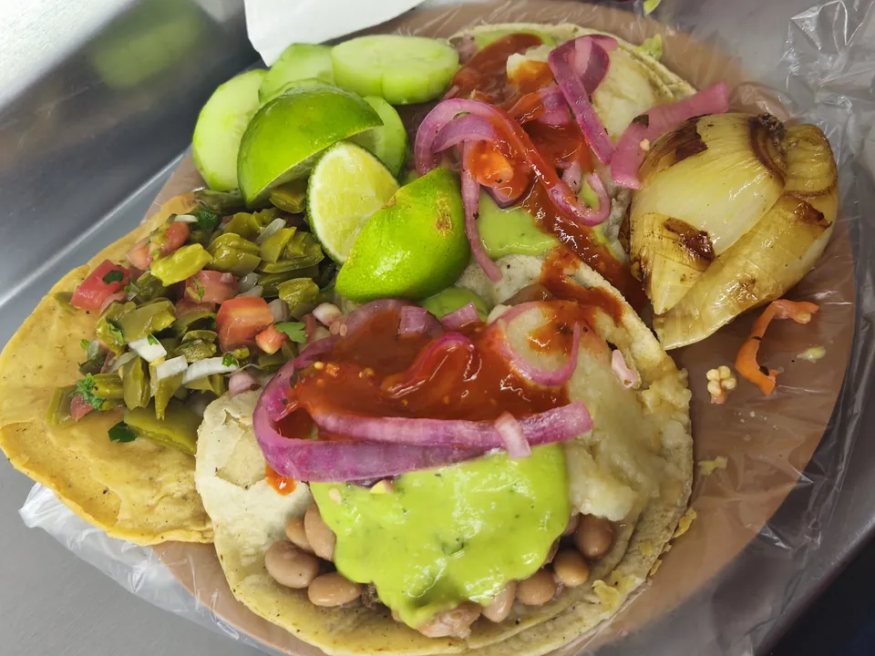
Asada, adobada y chorizo a la parrilla. Prendemos desde las 4 de la tarde en tres sucursales.
La carta
Con papa y frijoles. La que más nombran las reseñas.
Pregunta el precioBuen sabor y buena calidad, dicen quienes la piden.
Pregunta el precioTambién sale de la parrilla. Pídelo solo o combinado.
Pregunta el precioAcompañan
Barra libre
$100 a $200 por persona. Para comer aquí o para llevar.
Arma tu plato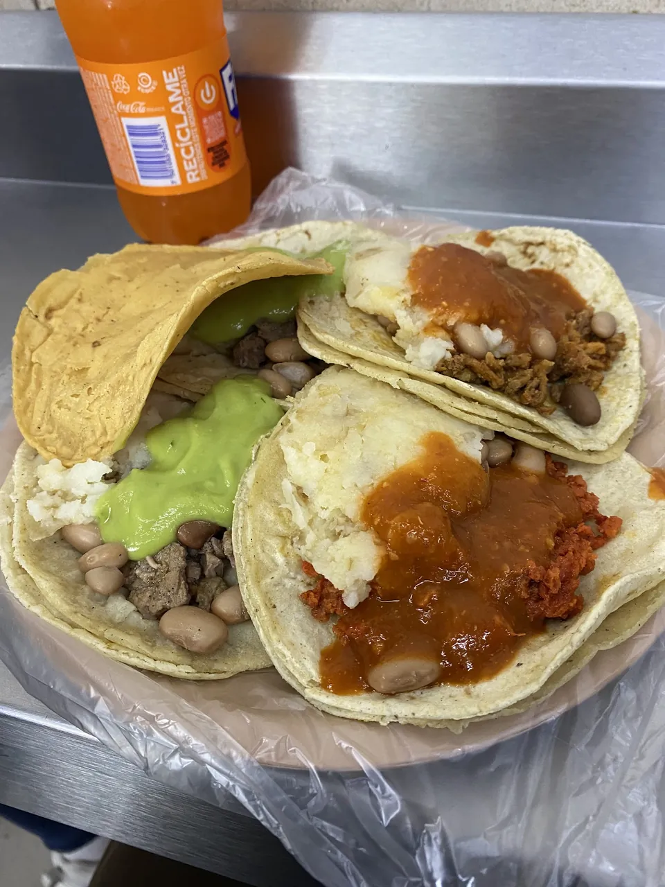
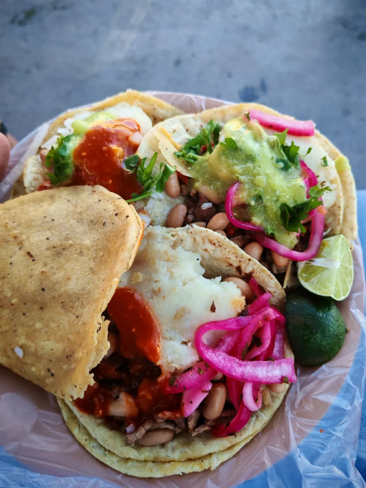
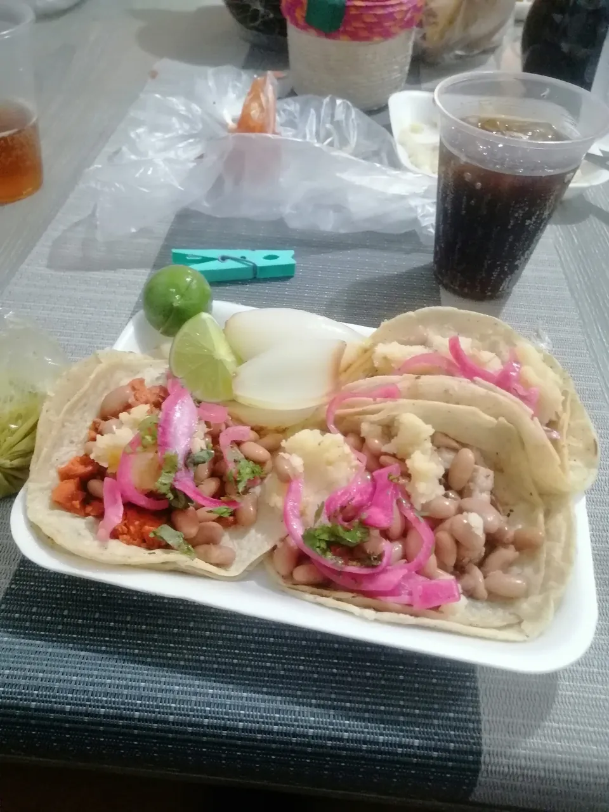
Arma tu pedido
Toca cada taco y escoge su carne. Lo demás se lo pones tú a gusto.
Escoge la carne de tus tres tacos.
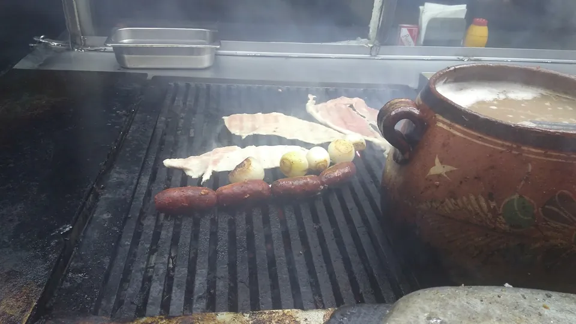
Lo que dicen en Google
"Excelentes tacos, a mi y mi familia nos gusta mucho ir ahí. Se los recomiendo."
Juan Ruiz · Google · Ferrocarril
"Los mejores tacos, son parada obligatoria siempre que visito Aguascalientes. Atención súper rápida y comida deliciosa."
Mauricio Parra · Google · Ferrocarril
"Muy buenos los tacos y bien servidos, lo único malo es que no hay mesas, solo sillas."
Gabriel Nava · Google · Ferrocarril
"Son taquitos callejeros, deliciosos. Tienen barra de salsas y verdurita, probé los de asada con papa y frijoles, los ameeee. Son limpios…"
Marie Rangel · Google · Ferrocarril
"Estos tacos son los más ricos que he probado. Barra de verduras y salsas frescas, súper limpios, carne asada y adobada de muy buena calidad y excelente sabor…"
Adriana Mejia · Google · Ferrocarril
"Muy ricos, súper recomendable, no los llenan de papa como en otros lados, cantidades buenas. Y el personal amable."
Cristina García de Luna · Google · Chávez
"Los tacos son muy buenos. La atención es excelente, aunque suele haber gente te atienden rápido y son amables."
Bekka Reyes · Google · Independencia
"Buen sabor, porción grande, servido rápido. Siempre tienen todo súper limpio…"
Gabriela Herrera · Google · Independencia
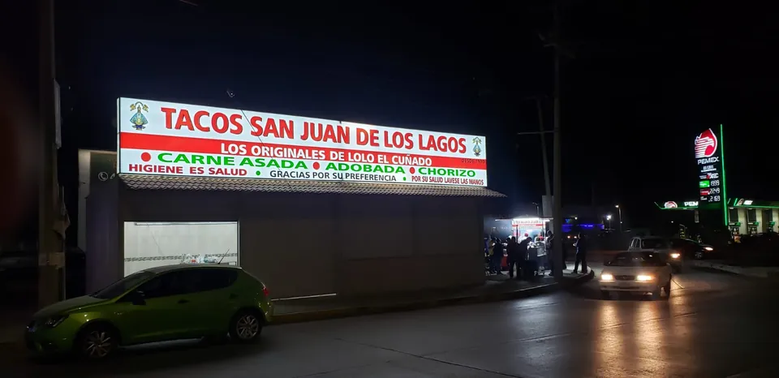
Cae la tarde
La parrilla arranca a las 4 y no se apaga hasta pasada la medianoche. Fines de semana, hasta la 1.
Ver horario por díaEl lugar
No hay mesas: se come de pie o en sillita, taco en mano.
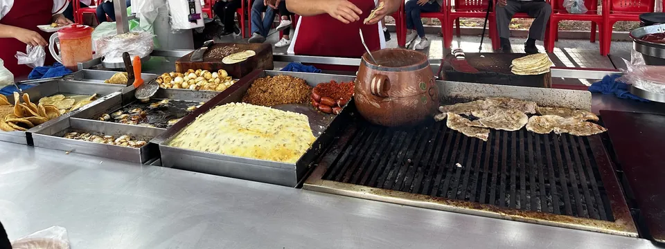
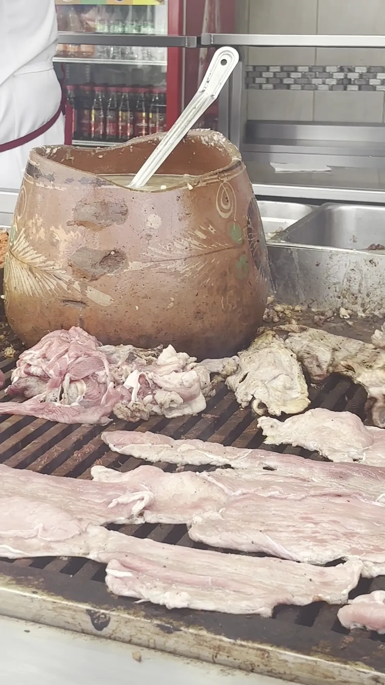
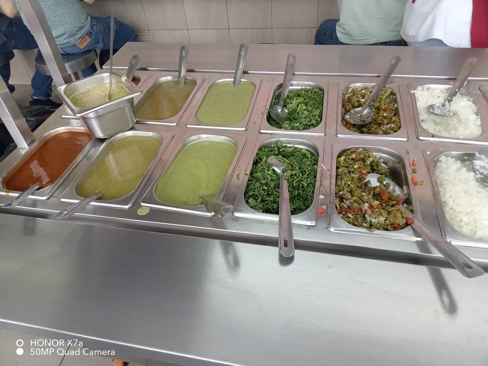
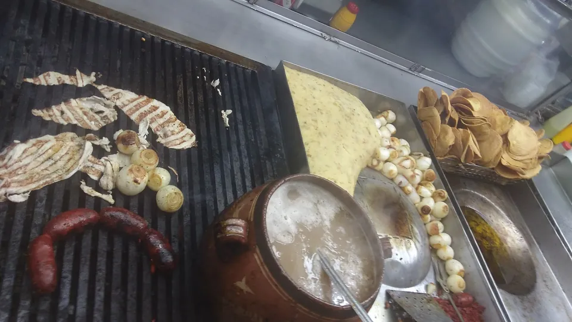
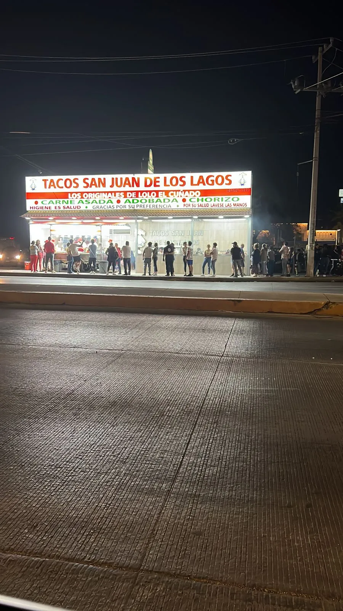
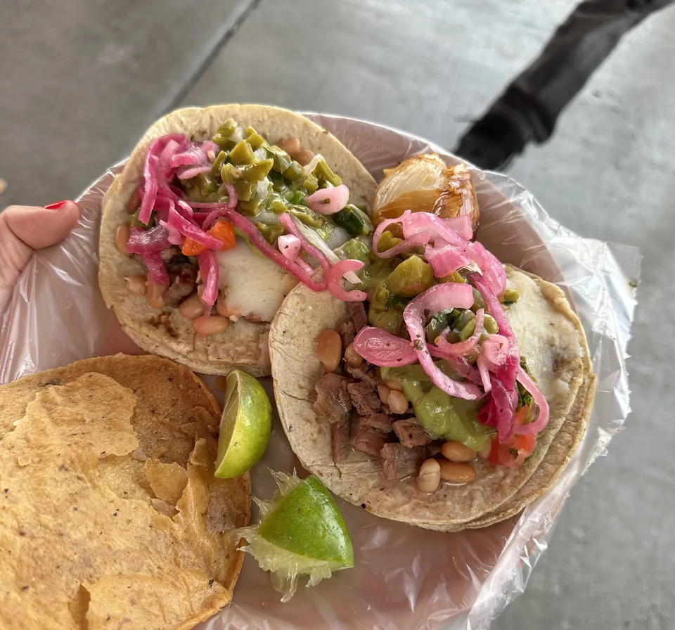
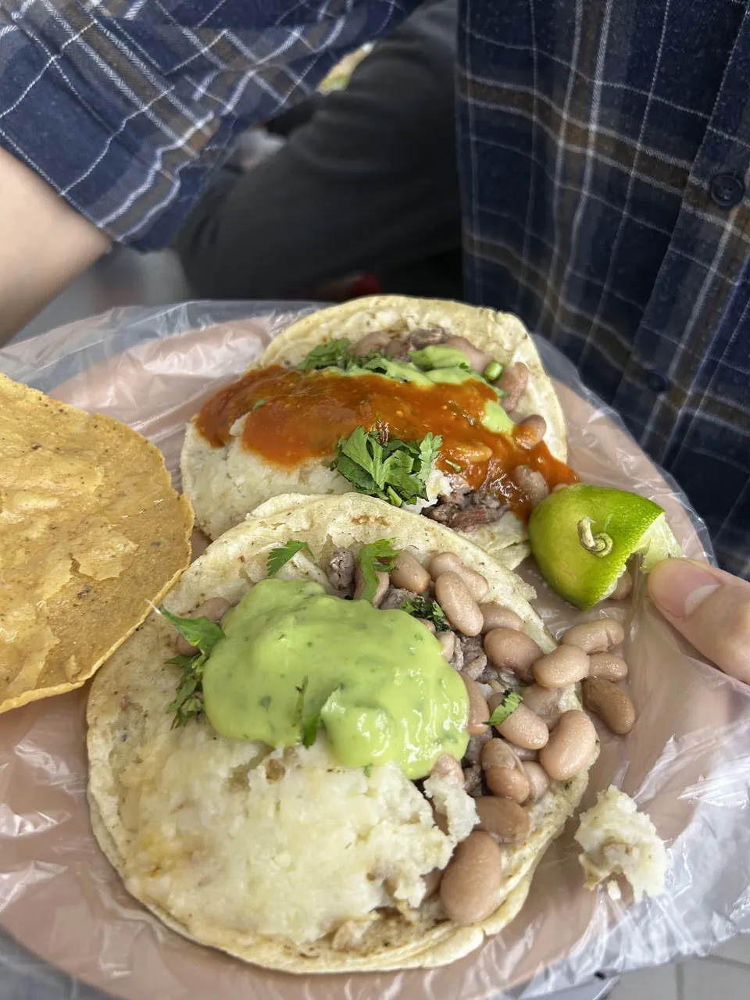
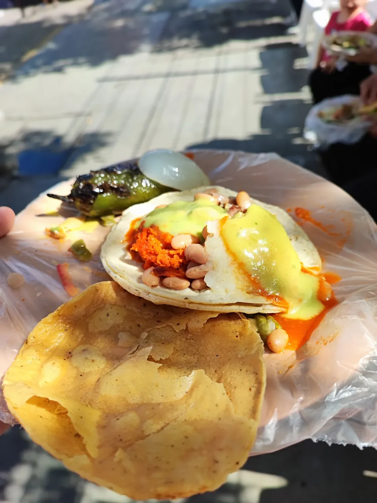
Visítanos
Av. Ferrocarril 901, IV Centenario, Aguascalientes
Revisando horarioPara llevar o para comer ahí.
Todo listo para completar
Pásanoslo por el mismo chat donde te llegó esta muestra.